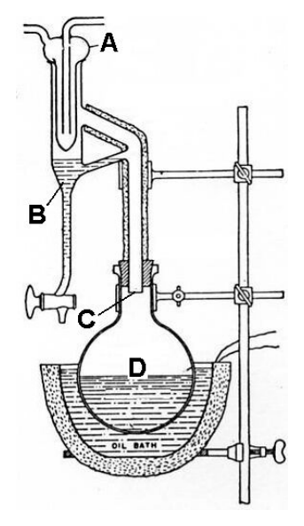
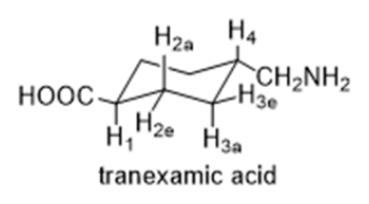
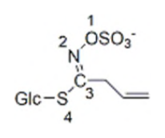
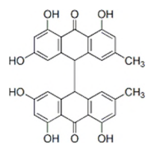
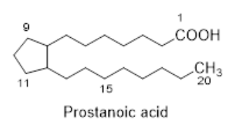
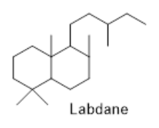

開卷有益 ／
藥師 ／ 藥物分析與生藥學 ／ 109 年第 2 次109 年第 2 次藥師藥物分析與生藥學試題與答案
這一頁是民國 109 年第 2 次藥師藥物分析與生藥學的整份歷屆試題，共 80 題，題目與標準答案出自考選部「國家考試試題及測驗式試題答案」開放資料，其中 77 題附有詳解。以下逐題列出題幹、選項與答案；要計時作答或記錄成績，請用線上練習。
考選部原始場次代碼：109100
線上作答這一科 →
全部 80 題
第 1 題
測定費氏（Karl Fischer）試劑之力價時，若115 mg 的酒石酸鈉（Na2C4H4O6‧2H2O, M.W. = 230）需消耗10.0 mL 的費氏試劑，則試劑之力價為多少？
（A） 11.50（B） 5.75（C） 1.80（D） 0.90答案：（C）
詳解與考點 正解：費氏試劑力價要換算成每 mL 可反應的水量。酒石酸鈉二水合物的莫耳數為 0.115 g / 230 g/mol = 5.00 × 10^-4 mol = 0.500 mmol；每 1 mol 鹽含 2 mol H2O，故水量為 0.500 mmol × 2 = 1.00 mmol H2O。再換算水的質量：1.00 mmol × 18.0 mg/mmol = 18.0 mg H2O；力價 = 18.0 mg H2O / 10.0 mL = 1.80 mg H2O/mL，故選 C。
A：11.50 是將 115 mg 檢品直接除以 10.0 mL 得到的數值，尚未換算結晶水量，不能作為費氏試劑的水分力價。
B：5.75 沒有依酒石酸鈉二水合物的莫耳數與 2 mol H2O 的化學計量關係完成換算，與滴定的水量不符。
D：0.90 mg H2O/mL 恰為正確值的一半，等於只計入 1 個結晶水；題示化學式含 2H2O，兩個水分子都必須計入。
本題考點：Karl Fischer 力價（Karl Fischer titer）——先由標準品的莫耳數求水的莫耳數，再以水的質量除以試劑體積；水合物化學計量（hydrate stoichiometry）——化學式中的結晶水係數必須乘入，不能把鹽的質量直接當成水量。
第 2 題
水可溶性氯化物樣品1.42 g，以重量分析法測定其氯含量，得1.43 g AgCl，則該樣品中氯之含量百分比（% w/w）約為何？（AgCl 的分子量143.5 g/mol；Cl 的原子量35.5 g/mol）
（A） 25（B） 40（C） 50（D） 99答案：（A）
詳解與考點 正解：重量分析所得 1.43 g AgCl 先換算成氯的質量。AgCl 的莫耳數為 1.43 g / 143.5 g/mol = 9.97 × 10^-3 mol；AgCl 與 Cl 的莫耳比為 1:1，所以氯的質量為 9.97 × 10^-3 mol × 35.5 g/mol = 0.354 g。氯含量 = 0.354 g / 1.42 g × 100% = 24.9% 約為 25%，故選 A。
B：40% 未依 AgCl 中氯的質量分率 35.5/143.5 換算，與沉澱重量所對應的氯量不符。
C：50% 把 AgCl 與 Cl 的 1:1 莫耳關係誤當成 1:1 質量關係；AgCl 的銀部分亦占有大部分質量。
D：99% 幾乎把 AgCl 沉澱重量視為原檢品中的氯重量，忽略沉澱中加入的銀離子質量。
本題考點：沉澱重量分析（gravimetric precipitation analysis）——由沉澱質量乘上待測成分的化學計量質量分率，再除以檢品重；莫耳比與質量比（mole ratio versus mass ratio）——反應式的 1:1 只表示莫耳數相同，質量仍須乘各自莫耳質量。
第 3 題
下列何者不是非水滴定法中常用之指示劑？
（A） 結晶紫（crystal violet）（B） 孔雀石綠（malachite green）（C） 瑞香酚酞（thymolphthalein）（D） 鐵明礬（ferric ammonium sulfate）答案：（D）
詳解與考點 正解：非水滴定的指示劑須能在非水酸鹼滴定終點附近產生可辨識的變色；（D）鐵明礬（ferric ammonium sulfate）是鐵鹽，常見用途不屬此類酸鹼變色指示劑，故選 D。
A：結晶紫（crystal violet）可作為非水酸滴定的指示劑，其顏色隨酸性環境改變而轉換。
B：孔雀石綠（malachite green）也是常用的非水滴定酸鹼指示劑，可用於辨認適當終點。
C：瑞香酚酞（thymolphthalein）可用於非水鹼滴定等需要偏鹼性變色範圍的系統，並非本題所問的例外。
本題考點：非水滴定指示劑（nonaqueous titration indicators）——依滴定劑與溶媒造成的終點酸鹼範圍選擇有機變色指示劑；鐵明礬的分析角色（ferric ammonium sulfate）——鐵鹽常用於特定氧化還原或沉澱反應的終點辨認，不以非水酸鹼指示劑分類。
第 4 題
下列有關費氏（Karl Fischer）水分測定法之敘述，何者錯誤？
（A） 是藥典規範之水分定量法（B） 可測定酸鹼值（C） 只需少量的樣品（D） 常以甲醇做為溶劑答案：（B）
詳解與考點 正解：費氏水分測定法的反應專一目標是水，利用碘、二氧化硫與鹼性試劑的反應終點定量水分，並不是量測溶液酸鹼值，故（B）錯誤，故選 B。
A：Karl Fischer 法為藥典收載的水分定量方法，可用於許多不適合加熱乾燥的檢品。
C：此法所需檢品量通常很少，仍可由消耗的費氏試劑量換算水分。
D：甲醇常作為 Karl Fischer 反應系統的溶劑，協助試劑與檢品中的水反應。
本題考點：Karl Fischer 水分測定（Karl Fischer water determination）——要定量的是水的莫耳數，不把酸鹼值讀數當成結果；水分與酸鹼值的區別（water content versus pH）——前者是水的含量，後者是氫離子活度，量測原理不同。
第 5 題
下列何者為苯二甲酸氫鉀（potassium biphthalate）在非水滴定實驗中的用途？
（A） 非水酸滴定實驗中的一級標準鹼（B） 非水酸滴定實驗中的一級標準酸（C） 非水鹼滴定實驗中的一級標準鹼（D） 非水鹼滴定實驗中的一級標準酸答案：（A）
詳解與考點 正解：非水酸滴定以酸性滴定液測定弱鹼，苯二甲酸氫鉀（potassium biphthalate）在此實驗用來標定酸性滴定液，屬一級標準鹼，故選 A。
B：苯二甲酸氫鉀雖含可解離氫，但在本題的非水酸滴定用途是接受酸性滴定液的當量反應，不以一級標準酸分類。
C：非水鹼滴定的滴定液為鹼性試劑，所需的標定角色與非水酸滴定不同；（C）把用途的滴定方向顛倒。
D：（D）同時把滴定方向與苯二甲酸氫鉀在本實驗中的標準品角色弄反，不能據此標定非水鹼滴定液。
本題考點：非水酸滴定（nonaqueous acidimetry）——以酸性滴定液測定弱鹼時，標準品必須能提供明確且穩定的當量反應；一級標準品（primary standard）——判斷用途要同時看標準品在何種溶媒與何種滴定方向下被使用。
第 6 題
以1 N 氫氧化鈉滴定稀磷酸之含量測定中，下列何者為最適當之指示劑？
（A） methyl orange（B） methyl red-methylene blue（C） phenolphthalein（D） thymolphthalein答案：（D）
詳解與考點 正解：稀磷酸以氫氧化鈉滴定時，採用的終點位於偏鹼性範圍；瑞香酚酞（thymolphthalein）的變色區域最貼近此終點，故選 D。
A：methyl orange 的變色範圍偏酸性，在磷酸滴定尚未到達所需終點前就會變色。
B：methyl red-methylene blue 的變色範圍也偏酸性，不能準確標示本題所需的鹼性終點。
C：phenolphthalein 的變色範圍雖已偏鹼性而看似可用，但其範圍較低；本實驗終點以更偏鹼性的 thymolphthalein 較適當。
本題考點：指示劑選擇（indicator selection）——把指示劑變色範圍與當量點附近的 pH 範圍配對；多元酸滴定（polyprotic acid titration）——不同中和階段的終點酸鹼度不同，不能只因滴定劑是強鹼就任選指示劑。
第 7 題
關於黏度之敘述，下列何者錯誤？
（A） 運動黏度的單位通常以厘斯（centistoke）表示（B） 液體檢品通過毛細管的時間愈長，其黏度愈大（C） 室溫下，水的運動黏度為1 厘斯（D） V = Kt 為黏度計算公式，其中V 為液體之絕對黏度答案：（D）
詳解與考點 正解：毛細管黏度計的 V = Kt 式中，流出時間 t 與儀器常數 K 所得的是運動黏度，而非絕對黏度；絕對黏度還須與密度相關，故（D）錯誤，故選 D。
A：運動黏度常以厘斯（centistokes，cSt）表示，這是其常用單位。
B：在同一黏度計與測定條件下，液體通過毛細管的時間愈長，表示流動阻力較大，運動黏度也愈大。
C：室溫下水的運動黏度約為 1 cSt，是毛細管黏度測定常用的比較基準。
本題考點：運動黏度（kinematic viscosity）——毛細管法以 V = Kt 由流出時間求得；絕對黏度（dynamic viscosity）——需將運動黏度與密度連結，不能直接與 V = Kt 等同。
第 8 題
以AAS 進行蔗糖中含鉛量之限量分析時，可加入下列何者與鉛形成可溶性有機錯合物？
（A） ammonium pyrrolidinedithiocarbamate（B） mannitol（C） bismuth subcarbonate（D） 4-methyl-pentan-2-one答案：（A）
詳解與考點 正解：ammonium pyrrolidinedithiocarbamate 可提供 dithiocarbamate 配位基，與鉛形成可萃取的有機錯合物，使鉛適合進一步以 AAS 偵測，故選 A。
B：mannitol 是多羥基醇，常見於糖類相關用途，不能作為本題萃取鉛的 dithiocarbamate 螯合劑。
C：bismuth subcarbonate 是鉍的無機鹽，既非配位鉛的有機螯合試劑，也不提供有機可溶錯合物。
D：4-methyl-pentan-2-one 可作為有機萃取相的溶媒而看似相關，但它本身不提供螯合鉛所需的配位基；形成錯合物的是（A）試劑。
本題考點：螯合萃取（chelation extraction）——先以具配位基的試劑形成金屬有機錯合物，再利用有機相分離或濃縮；原子吸收光譜（atomic absorption spectrometry，AAS）——前處理的目的在降低基質干擾並讓待測金屬進入可量測的狀態。
第 9 題
下列成分，何者與檢品之皂化價有關？
（A） 游離脂肪酸及酯（B） 游離脂肪酸及醇（C） 脂肪醇及酯（D） 脂肪酸及甘油答案：（A）
詳解與考點 正解：皂化價是每 g 油脂完成皂化與中和所需的鹼量，因此同時包括中和游離脂肪酸與水解酯鍵所耗的鹼，故選 A。
B：脂肪醇不會在皂化價測定中像游離脂肪酸或酯一樣消耗鹼，將它列入會改變判準。
C：酯確實會被鹼水解，但脂肪醇不是皂化價的耗鹼成分，且此選項漏掉游離脂肪酸。
D：甘油是三酸甘油酯皂化後的產物，不是計算皂化價時與鹼反應的成分；判斷時要看反應前會耗鹼的官能基。
本題考點：皂化價（saponification value）——計算的是中和游離脂肪酸加上水解酯所需的總鹼量；酯鹼解（base hydrolysis of esters）——酯鍵被鹼水解後產生醇與羧酸鹽，產物本身不再是原先的耗鹼對象。
第 10 題
下圖是中華藥典用來測定生藥揮發油含量的蒸餾裝置，下列有關圖中所標A、B、C、D 四處之敘述何者錯誤？

（A） A 是冷凝器（B） B 是輕油集油器（C） C 是集油器的蒸氣入口，也是蒸餾水回流流入燒瓶之出口（D） D 是盛有檢品與水混合物的燒瓶答案：（B）
第 11 題
在tranexamic acid（結構如附圖）的氫核磁共振譜中，H2a和H3a的偶合常數約為多少Hz？

（A） 9-13（B） 3-5（C） 1-2（D） 5-8答案：（A）
詳解與考點 正解：圖中H2a與H3a均以「a」標示為環己烷椅式構形上的軸向（axial）氫，兩者位於相鄰碳、彼此呈反式雙軸向（trans-diaxial）排列，二面角接近180°；依Karplus關係式，二面角接近180°或0°時偶合常數最大，軸-軸偶合常數典型範圍落在9-13 Hz，選A。
B：3-5 Hz是軸-赤道（axial-equatorial）或赤道-赤道（equatorial-equatorial）偶合常數的典型範圍，二面角接近60°，偶合常數明顯偏小，與H2a、H3a皆為軸向的排列不符。
C：1-2 Hz過小，通常出現在遠距偶合（long-range coupling，如W型四鍵偶合）等特殊情形，不是相鄰碳氫的一般vicinal偶合範圍。
D：5-8 Hz介於軸-軸與軸-赤道之間，常見於構形快速互換或二面角偏移的情形，與圖中明確標示的雙軸向排列不符。
本題考點：環己烷椅式構形的vicinal偶合常數（Karplus relationship）——軸-軸偶合常數最大（約9-13 Hz），軸-赤道或赤道-赤道偶合常數較小（約3-5 Hz）；由標示的a（axial）、e（equatorial）位置即可直接判讀偶合常數大小範圍。
第 12 題
在aspirin 的 1H-1H COSY 圖譜中，HC會與幾個氫有關聯訊號？
（A） 2（B） 3（C） 1（D） 4答案：（B）
詳解與考點 正解：¹H-¹H COSY 的交叉峰反映氫原子間可經由鍵傳遞的標量耦合；aspirin 苯環為鄰二取代，環上四個芳香氫彼此互為鄰位、間位或對位關係，H_C 與其餘三個芳香氫均可見交叉峰，乙醯基的甲基氫則不與芳香氫耦合，故（B）所列的 3 個相關氫訊號為 H_C 的關聯數，故選 B。
A：2 個訊號少計了一個與 H_C 有標量耦合的交叉峰——只計入鄰位與間位、漏掉較弱的對位耦合時便會少算；判讀時應計入全部可辨識的相關訊號。
C：1 個訊號只保留 H_C 的鄰位耦合關係，未計入與另兩個芳香氫的間位、對位關聯，未反映 H_C 在本題耦合網絡中的全部關聯。
D：4 個訊號多計了一個不屬於 H_C 相關峰的訊號；環上能與 H_C 耦合者僅其餘三個芳香氫，乙醯基甲基氫不與芳香氫耦合，H_C 自身的對角峰也不算相關峰。
本題考點：¹H-¹H COSY（proton-proton correlation spectroscopy）——交叉峰用來連結具有可觀察標量耦合的氫訊號；標量耦合（scalar coupling）——相關峰數須依各氫的耦合網絡逐一計數，不以化合物中氫原子總數代替。
第 13 題
下列timolol 之比旋光度表示法，何者最適當？
（A） = –6.02（589 nm, 25℃）（B） = –6.02（1 M HCl, 25℃）（C） = –6.02（c = 9.8, 589 nm）（D） = –6.02（c = 9.8, 1 M HCl）答案：（D）
詳解與考點 正解：比旋光度以 [α] 的上標溫度與下標光源記錄測定條件（D 線即 589 nm），括號則須補上符號無法表達的檢液濃度 c 與溶媒；（D）同時列有 c = 9.8 與 1 M HCl，溶液條件最完整，故選 D。
A：僅列 589 nm 與 25℃，未交代檢液濃度和使用的溶媒；濃度不同會影響旋光測定的可比性。
B：雖列出 1 M HCl 與 25℃，但缺少濃度，條件仍不完整。
C：雖有 c = 9.8 與 589 nm，卻沒有溶媒；旋光度記錄必須讓溶液條件可重現。
本題考點：比旋光度表示法（specific rotation notation）——以標準符號標示溫度與波長，並加註濃度和溶媒；旋光測定條件（polarimetry conditions）——比較數值前先確認溫度、光源波長、濃度與溶媒是否完整一致。
第 14 題
關於差異光譜法（difference spectrophotometry）原理的敘述，下列何者錯誤？
（A） 可經由微調分析物溶液的溫度而達到波長移動（B） 混合物樣品中特定分析物可藉由加入標準品達成含量測定（C） 進行氧化還原等反應而達到波長移動（D） 混合物的成分分析是以分析物的特定反應來進行答案：（A）
詳解與考點 正解：差異光譜法利用分析物在兩種明確化學狀態下的吸收差異，例如酸鹼、氧化還原或特定反應後的光譜改變；微調溫度不是此法用來建立特異波長位移的主要原理，故（A）錯誤，故選 A。
B：在混合基質中加入標準品可建立目標分析物的差異訊號，協助其含量測定，屬可運用的定量設計。
C：氧化還原會改變發色團的電子結構，因而可產生可量測的吸收光譜差異或波長位移。
D：混合物分析可藉分析物的特定化學反應產生差異訊號，讓目標物自背景或其他成分中分辨出來。
本題考點：差異光譜法（difference spectrophotometry）——比較同一分析物在兩種可控制化學狀態下的吸收差，而非只看單一光譜；選擇性反應（selective reaction）——混合物中能專一改變目標分析物光譜的反應，才可用來降低基質干擾。
第 15 題
於質譜分析中，下列何者不是撞擊誘導碎裂法（collision induced dissociation, CID）的主要應用？
（A） 解析光學異構物的立體結構（B） 增加定量血中藥物濃度的選擇性與靈敏度（C） 提供不純物的碎裂片段資訊（D） 分析肽藥物的胺基酸組成與序列答案：（A）
詳解與考點 正解：撞擊誘導碎裂（collision induced dissociation，CID）主要產生可供串聯質譜判讀的碎片離子；一般光學異構物的絕對或相對立體結構不能僅靠 CID 作為主要解析方法，故（A）不是主要應用，故選 A。
B：CID 可在串聯質譜選取特定母離子與產物離子轉換，提升血中藥物定量的選擇性與靈敏度。
C：不純物經 CID 後的碎裂片段可提供結構線索，有助於鑑別其與主成分的差異。
D：肽類可藉 CID 產生沿胜肽鍵斷裂的片段離子，再用片段序列推定胺基酸組成與序列。
本題考點：撞擊誘導碎裂（collision induced dissociation，CID）——以碰撞活化離子並取得結構相關碎片；串聯質譜定量（tandem mass spectrometric quantitation）——選定母離子／產物離子轉換可提高複雜基質中的分析選擇性。
第 16 題
使用配備正離子化學游離源之質譜儀時，下列敘述何者錯誤？
（A） 常使用的反應氣體包括甲烷、異丁烷、氨（B） 反應氣體僅形成一種離子型態（C） 分析物可與反應氣體離子結合或被質子化（D） 是一種軟性游離技術（soft ionization technique）答案：（B）
詳解與考點 正解：正離子化學游離（positive chemical ionization）先游離反應氣體，再由多種反應氣體離子與分析物進行質子轉移或加合；反應氣體不會只形成一種離子型態，故（B）錯誤，故選 B。
A：甲烷、異丁烷與氨皆為正離子化學游離常用的反應氣體。
C：分析物可被反應氣體離子質子化，或形成加合離子，這正是正離子化學游離常見的離子生成途徑。
D：化學游離產生的碎裂通常較電子游離少，因此歸類為軟性游離技術。
本題考點：正離子化學游離（positive chemical ionization，PCI）——先看反應氣體離子如何把質子或加合物轉移給分析物；軟性游離（soft ionization）——分子離子相關訊號較容易保留，但仍可能有多種試劑離子與產物離子。
第 17 題
有關折光率測定法之敘述，下列何者錯誤？
（A） 可用於鑑別藥物之純度（B） 折光率等於光線入射角之正弦與其折射角正弦之比（C） 蒸餾水之折光率在20℃與25℃下分別為1.3325、1.3330（D） 至少量測三次，求其平均值答案：（C）
詳解與考點 正解：水的折光率會隨溫度升高而下降，所以 20℃ 的折光率應高於 25℃；（C）把 1.3325 與 1.3330 對應的溫度顛倒，故（C）錯誤，故選 C。
A：折光率是物質的特性常數之一，可在規定溫度與波長下用於鑑別及純度檢查。
B：相對於空氣時，折光率可表示為入射角正弦除以折射角正弦，符合 Snell 定律的關係。
D：重複量測至少三次並取平均值，可降低偶然誤差對折光率結果的影響。
本題考點：折光率與溫度（refractive index and temperature）——比較折光率時必須先固定溫度與測定波長，液體數值常隨溫度改變；Snell 定律（Snell's law）——用入射角與折射角正弦的比值連結介質的折光行為。
第 18 題
下列關於原子放射光譜分析之敘述，何者正確？
（A） 檢驗鈉金屬時，會出現紫色焰光（B） 燃燒壓縮空氣，使溫度高達1000 度（C） 檢測時須選擇該原子之放射波長（D） 未知物之定量分析時，須進行單濃度校正答案：（C）
詳解與考點 正解：原子放射光譜以受激原子回到較低能階時放出的特徵光為依據，因此偵測時必須選擇待測原子的放射波長，故選 C。
A：鈉的焰光特徵為黃色而非紫色；紫色是其他金屬離子常見的焰色，不能用來判定鈉。
B：壓縮空氣可作為氧化劑的一部分，但本身不是可燃燃料；產生火焰須搭配燃料，不能說燃燒壓縮空氣即固定得到 1000 度。
D：未知物定量通常須以多個濃度的標準品建立校正關係；單一濃度無法確認斜率與線性範圍。
本題考點：原子放射光譜（atomic emission spectrometry）——以元素專屬的放射波長辨識與量測待測原子；校正曲線（calibration curve）——定量未知物時以多點標準品建立濃度與訊號的關係，再插值求樣品濃度。
第 19 題
在鹼性水溶液下，含酚基之化合物，其最大吸收波長（λmax）與molar absorptivity（ε）產生之改變分別 為何？
（A） bathochromic；hypochromic shift（B） bathochromic；hyperchromic shift（C） hypsochromic；hypochromic shift（D） hypsochromic；hyperchromic shift答案：（B）
詳解與考點 正解：含酚基化合物在鹼性水溶液中去質子化形成 phenolate，電子離域增加使吸收往較長波長移動，且吸收強度上升；因此分別為 bathochromic 與 hyperchromic shift，故選 B。
A：bathochromic shift 的波長方向正確，但 phenolate 形成後通常是吸收強度增加，不是 hypochromic shift。
C：hypsochromic shift 指最大吸收波長往短波長移動，與酚基在鹼性條件下形成 phenolate 的方向相反。
D：（D）同時把波長移動與吸收強度的方向顛倒；分辨關鍵在 bathochromic/hypsochromic 管波長，hyperchromic/hypochromic 管強度。
本題考點：酸鹼對紫外光譜的影響（acid-base effects on UV spectra）——發色團去質子化後若電子離域增加，優先判斷長波長與較強吸收；光譜位移命名（bathochromic、hypsochromic、hyperchromic、hypochromic shifts）——前兩者描述 λmax 方向，後兩者描述 molar absorptivity 的增減。
第 20 題
苯在255 nm 有最大吸收，但若有取代基而使其最大吸收之波長增加，此一現象稱為：
（A） blue shift（B） bathochromic shift（C） hypochromic shift（D） hyperchromic shift答案：（B）
詳解與考點 正解：判準是最大吸收波長的移動方向。苯環因取代基造成 λmax 由 255 nm 往較長波長移動，表示 π→π* 躍遷所需能隙降低，稱為（B）bathochromic shift，也就是紅位移，故選 B。
A：blue shift 是 hypsochromic shift 的同義詞，指 λmax 往短波長移動；方向和題幹相反。
C、D：兩者都描述吸收強度而非波長位置。（C）hypochromic shift 是莫耳吸光度下降，（D）hyperchromic shift 是莫耳吸光度上升；題幹問的是 λmax 增加，故非答案。
本題考點：紫外可見光譜位移命名（bathochromic/hypsochromic/hypochromic/hyperchromic shift）——先判斷題目問波長或強度，再依增加或減少選名稱；共軛效應（conjugation effect）——共軛延伸或助色團使躍遷能隙縮小時，λmax 往長波長移動。
第 21 題
有關近紅外光分析（near-infrared analysis, NIRA）的敘述，下列何者錯誤？
（A） 波長區段在700～2500 nm 之間（B） 係紅外光基本振動所出現的倍頻吸收（C） 其優勢在於多成分檢品的組成鑑定與定量（D） 所得訊號強度約比紅外光測得者高1000 倍答案：（D）
詳解與考點 正解：近紅外光分析的訊號主要來自基本振動的倍頻與組合頻帶，因此吸收通常比中紅外光的基本振動弱。（D）將訊號強度說成高約 1000 倍，剛好把強弱關係顛倒，故選 D。
A：近紅外區常以約 700～2500 nm 表示，落在可見光與中紅外區之間，敘述符合常用波段範圍，故非答案。
B：基本振動的倍頻吸收是近紅外光譜的主要來源；因躍遷機率較低，才會形成較弱而寬廣的吸收帶，故非答案。
C：近紅外光可搭配化學計量學處理重疊訊號，適合多成分檢品的組成鑑定與定量，故非答案。
本題考點：近紅外光分析（near-infrared analysis, NIRA）——看到倍頻或組合頻帶時，先判為近紅外區，不可當作基本振動；吸收帶強度（absorption intensity）——倍頻帶通常較基本振動弱，判讀強弱不可只因儀器可量測便反推訊號較強；化學計量學（chemometrics）——多成分近紅外分析須以校正模型拆解重疊光譜。
第 22 題
下列紅外光譜檢品製備法中，何者可測出檢品是否具多晶形（polymorphism）？
（A） 溴化鉀錠法（B） 溶液法（C） 糊漿法（D） 薄膜法答案：（A）
詳解與考點 本題經考選部公告一律給分。判斷紅外光譜能否測出多晶形，關鍵在於製樣過程是否會因研磨、加壓而破壞原始晶型：(C)糊漿法（如Nujol mull）不需高壓成型，被多數教材列為保留多晶形資訊之首選製樣法；惟(A)溴化鉀錠法雖易因研磨壓錠導致晶型轉變，部分教材仍列為可用以比對多晶形差異之方法，二說並存致爭議。(B)溶液法因分子分散於溶劑中已失去固態晶格資訊，(D)薄膜法多用於高分子材料，皆非多晶形鑑定首選，可排除。作答以現行藥物分析學教材為準。
第 23 題
在化合物 之 1H-NMR 圖譜中，劃底線之氫呈現之訊號為下列何者？
（A） singlet（B） doublet（C） triplet（D） quartet答案：（A）
詳解與考點 正解：^1H-NMR 的裂分由可耦合的鄰近非等價氫數決定；劃底線之氫的相鄰碳上沒有可耦合的非等價氫（n = 0），依 n+1 規則裂分數為 1，因此呈現（A）singlet，故選 A。
B：doublet 代表有 1 個相鄰且可耦合的非等價氫，會形成兩條強度相近的訊號；此條件與 singlet 不同。
C：triplet 通常代表有 2 個相鄰且等價的耦合氫，訊號強度比近似 1:2:1；不能與無鄰近耦合氫混用。
D：quartet 通常代表有 3 個相鄰且等價的耦合氫，訊號強度比近似 1:3:3:1；裂分數與（A）不同。
本題考點：核磁共振裂分規則（n+1 rule）——先數與觀察氫相鄰、可耦合且非等價的氫數，再決定訊號裂分；化學等價性（chemical equivalence）——相鄰氫即使存在，若因等價或交換而不造成可分辨耦合，裂分型態仍可能簡化。
第 24 題 待校
Acetylacetone（CH3COCH2COCH3）之氫核磁共振譜中，最可能會出現幾個訊號峰？
（A） 1（B） 2（C） 3（D） 8答案：（B）
第 25 題
質譜分析之電子撞擊法（electron impact）常用之游離能量為多少eV？
（A） 30（B） 50（C） 70（D） 90答案：（C）
詳解與考點 正解：電子撞擊游離法的標準電子能量是（C）70 eV。此能量能產生具有再現性的分子離子與碎片離子分布，也是質譜資料庫常用的比對條件，故選 C。
A：30 eV 低於電子撞擊法的標準設定，游離與碎裂型態會和標準 EI 光譜不同，故非答案。
B：50 eV 也不是常用的標準 EI 能量；即使可形成離子，碎片相對強度未必可直接與 70 eV 資料庫比對。
D：90 eV 高於標準設定，可能改變碎裂比例，不能作為題目所問的常用游離能量。
本題考點：電子撞擊游離（electron impact ionization, EI）——遇到常用 EI 游離能量時，以 70 eV 作為標準判斷；質譜碎裂圖譜（mass fragmentation pattern）——游離能量改變會影響碎片離子分布，資料庫比對須留意量測條件一致。
第 26 題
有3 支分離管柱，其長度與理論板數分別為：管柱甲10 cm、20000；管柱乙12 cm、30000；管柱丙15 cm、32000。下列何者分離效率（column efficiency）最佳？
（A） 管柱甲（B） 管柱乙（C） 管柱丙（D） 皆相同答案：（B）
詳解與考點 正解：比較不同長度管柱的分離效率要用理論板高 H=L/N，H 越小代表每一塊理論板所需長度越短，效率越高。（A）管柱甲的 H=10 cm/20000=5.0×10^-4 cm；（B）管柱乙的 H=12 cm/30000=4.0×10^-4 cm；（C）管柱丙的 H=15 cm/32000=4.6875×10^-4 cm。（B）管柱乙的 H 最小，故選 B。
A、C：（A）管柱甲的 H 為 5.0×10^-4 cm，（C）管柱丙的 H 為 4.6875×10^-4 cm，兩者都大於（B）管柱乙；理論板數的絕對值不能脫離管柱長度直接比較。
D：三支管柱的 H 計算值不同，代表每單位長度提供的理論板數不同，不能視為效率相同。
本題考點：理論板高（height equivalent to a theoretical plate, HETP）——比較不同管柱長度時，先算 H=L/N，數值較小者效率較佳；理論板數（theoretical plate number）——N 只適合比較相同長度管柱，長度不同時必須以 H 或 N/L 正規化。
第 27 題
以C18 HPLC 分析prednisolone 和betamethasone 時，下列移動相溶劑何者不適用？
（A） 甲醇（methanol）（B） 乙腈（acetonitrile）（C） 氯仿（chloroform）（D） 四氫呋喃（tetrahydrofuran）答案：（C）
詳解與考點 正解：C18 HPLC 屬逆相液相層析，移動相通常由水相搭配可與水互溶的有機改良劑組成。（C）chloroform 與水不互溶，難以形成穩定的常用逆相移動相，因此不適用，故選 C。
A：methanol 可與水互溶，常用來調整逆相移動相的洗脫力與選擇性，故非答案。
B：acetonitrile 也可與水互溶，且具有低黏度與良好 UV 透光特性，是常見的逆相有機改良劑，故非答案。
D：tetrahydrofuran 可與水互溶並可作為逆相層析的有機溶劑；實務上需留意其穩定性與系統相容性，但不因此成為不適用選項。
本題考點：逆相高效液相層析（reversed-phase HPLC）——固定相非極性、移動相須能維持均一液相，先檢查有機溶劑是否與水相相容；有機改良劑（organic modifier）——methanol、acetonitrile 與 tetrahydrofuran 可改變洗脫力與選擇性，選用時再評估偵測與系統相容性。
第 28 題
下列pH 值變動，何者對ibuprofen（pKa 4.4）在逆相層析法的滯留時間有最大的影響？
（A） pH 2 →pH 3（B） pH 4 →pH 5（C） pH 6 →pH 7（D） pH 8 →pH 9答案：（B）
詳解與考點 正解：ibuprofen 是 pKa 4.4 的弱酸，逆相層析中最明顯的滯留變化會出現在 pH 接近 pKa 時。用 A−/HA=10^(pH-pKa) 計算，（B）pH 4→pH 5 時比值由約 10^-0.4=0.40 變為 10^0.6=3.98，未解離的中性型比例大幅下降，滯留時間因而顯著改變，故選 B。
A：pH 2 到 pH 3 都遠低於 pKa，ibuprofen 主要仍為中性型；雖有變化，但解離比例改變小於 pKa 附近。
C、D：pH 6 到 pH 9 均高於 pKa，藥物已大多為帶電的去質子化型；再提高 1 個 pH 單位時，組成變化有限，對滯留時間的影響較小。
本題考點：Henderson-Hasselbalch 關係（Henderson-Hasselbalch equation）——弱酸或弱鹼在 pH 接近 pKa 時，離子化比例對 pH 最敏感；逆相滯留（reversed-phase retention）——中性型通常較疏水、滯留較久，帶電型比例上升時滯留通常縮短。
第 29 題
利用逆相層析建立diclofenac 的不純物分析方法時，下列何者無法減少分析時間？
（A） 增加移動相流速（B） 增加移動相中有機溶劑之比例（C） 增加移動相中水相之比例（D） 增加移動相之梯度變化速度（斜率）答案：（C）
詳解與考點 正解：逆相層析的水相比例增加會降低移動相洗脫力，使較疏水的 diclofenac 與不純物在非極性固定相停留更久。（C）增加水相比例不能減少分析時間，反而通常會延長，故選 C。
A：增加流速會縮短流動相通過管柱的時間，因此可縮短分析時間；實務上仍須受壓力與分離度限制，故非答案。
B：增加有機溶劑比例會提高逆相移動相的洗脫力，通常可使分析物較早洗脫，故非答案。
D：提高梯度變化速度可更快提升有機溶劑比例，使晚洗脫成分提早被洗脫，故非答案。
本題考點：逆相洗脫力（reversed-phase elution strength）——有機溶劑比例提高時，非極性分析物的滯留通常縮短；梯度洗脫（gradient elution）——要縮短晚洗脫成分的分析時間，可調整梯度斜率，但仍要確認分離度不被犧牲。
第 30 題
根據Van Deemter equation，下列何者與層析帶加寬無關？
（A） 樣品注射量（B） 靜相厚度（C） 靜相顆粒大小（D） 分析物於移動相之擴散係數答案：（A）
詳解與考點 正解：Van Deemter equation 以 H=A+B/u+C·u 描述管柱內造成層析帶加寬的因素，分別對應渦流擴散、縱向擴散與質傳阻力。（A）樣品注射量不在這三項之中；過量注射雖可能讓峰形變差，卻不是此方程式的項目，故選 A。
B：靜相厚度會影響分析物在兩相間達到平衡的速度，屬於質傳阻力 C·u 的相關因素，故非答案。
C：靜相顆粒大小會影響流路差異與質傳距離，和渦流擴散及質傳阻力有關，故非答案。
D：分析物在移動相的擴散係數會影響縱向擴散項 B/u，因此與層析帶加寬有關，故非答案。
本題考點：Van Deemter equation——判斷是否屬方程式因素時，對照 A、B/u、C·u 三項，不把管外或注射造成的展寬混入；理論板高（plate height）——H 最小的流速是效率最佳點，流速過慢或過快都可能使 H 增加。
第 31 題
下列何種物質不適用氣相層析法分析？
（A） limonene（B） β-cyclodextrin（C） pivalic acid（D） ethyl acetate答案：（B）
詳解與考點 正解：氣相層析法要求待測物能在進樣口與管柱溫度下汽化而不明顯分解。（B）β-cyclodextrin 是高分子量的環狀寡糖，具多個羥基、揮發性極低且容易受熱分解，不適合直接以 GC 分析，故選 B。
A：limonene 是揮發性的萜類化合物，可在適當條件下以 GC 分離，故非答案。
C：pivalic acid 的揮發性雖不如中性酯類理想，但可在合適管柱與條件下進行 GC 分析，故非答案。
D：ethyl acetate 沸點低且揮發性佳，是典型可用 GC 分析的小分子有機化合物，故非答案。
本題考點：氣相層析適用性（gas chromatography suitability）——先檢查分析物是否可汽化、具足夠熱穩定性且不會在進樣口分解；衍生化（derivatization）——高極性或低揮發性化合物若要用 GC，常需先改變其揮發性與熱穩定性。
第 32 題
下列有關逆相層析與正相層析之敘述，何者錯誤？
（A） 強陰離子交換樹脂可用於逆相層析（B） 甲醇可用於正相層析與逆相層析（C） HILIC 管柱分離效果通常較接近正相層析（D） 相較於C18 管柱，高極性樣品在C8 管柱之滯留時間較短答案：（D）
詳解與考點 正解：判斷（D）高極性樣品在 C8 與 C18 的保留時，不能只以烷基鏈較短便直接推為更早洗脫。C8 的鍵結相覆蓋較低，對高極性樣品的極性或殘餘 silanol 交互作用可能較明顯，因此其滯留時間不必較 C18 短；（D）將此關係一概說成較短，故為錯誤敘述，故選 D。
A：強陰離子交換官能基可與逆相保留機制併用於 mixed-mode 管柱；判別時要看是否同時具備離子交換與疏水保留，而非把兩種機制視為互斥，故非答案。
B：methanol 可作為正相系統中的極性改良劑，也可與水組成逆相移動相；是否使用取決於整個分離系統，故非答案。
C：HILIC 使用高極性固定相與高比例有機溶劑，保留極性分析物的行為通常較接近正相層析，故非答案。
本題考點：烷基鍵結相保留（alkyl-bonded phase retention）——比較 C8 與 C18 時，除疏水作用外，也要看高極性分析物的次級極性交互作用；混合模式層析（mixed-mode chromatography）——固定相可同時提供離子交換與逆相保留，不能只用單一機制分類；親水性交互作用層析（hydrophilic interaction liquid chromatography, HILIC）——高有機相與極性固定相是其接近正相行為的判別線索。
第 33 題
下列何者最不適宜當氣相層析法的移動相？
（A） He（B） N2（C） H2（D） CO2答案：（D）
詳解與考點 正解：傳統氣相層析的移動相是載氣，重點在於能穩定輸送樣品、背景低且適合偵測系統。（D）CO2 是超臨界流體層析常用的流動相，不是一般 GC 的標準載氣選擇，因此最不適宜，故選 D。
A：He 具低反應性且常用於 GC，可提供穩定載氣流，故非答案。
B：N2 是常見的 GC 載氣之一；雖最佳線速度與 He、H2 不同，仍可作為移動相，故非答案。
C：H2 也是常見載氣，具有高擴散性與良好分離效率；操作時需注意可燃性，但不改變其可用性，故非答案。
本題考點：氣相層析載氣（GC carrier gas）——先判斷氣體是否為常用、低背景且與偵測器相容的載氣；超臨界流體層析（supercritical fluid chromatography, SFC）——CO2 的可調密度使其適合作為 SFC 流動相，不能直接當作一般 GC 載氣的典型選項。
第 34 題
於超臨界流體層析分析中，下列何者與selectivity factor 最相關？
（A） 分析之壓力（B） 加入之有機溶媒（C） 分析之溫度（D） 偵測器之種類答案：（B）
詳解與考點 正解：超臨界流體層析中，selectivity factor 反映兩個分析物相對保留的差異；最直接改變溶劑極性與溶質－固定相作用的是有機改良劑。（B）加入有機溶媒會改變流動相組成與交互作用，因此和選擇性最相關，故選 B。
A：壓力主要改變超臨界流體的密度與洗脫力，常明顯影響保留，但未必最直接改變兩分析物的相對選擇性，故非答案。
C：溫度會影響流體密度、黏度與分配平衡，也會改變保留行為；相較於改良劑組成，通常不是題目所問的首要選擇性控制因子。
D：偵測器決定訊號取得方式，不改變管柱內兩分析物的分配與保留比，故非答案。
本題考點：選擇性因子（selectivity factor, α）——比較兩個峰的相對保留時，優先找會改變兩者分配差異的因素，不只看整體洗脫速度；超臨界流體改良劑（SFC modifier）——有機改良劑改變流動相極性與交互作用，是調整選擇性的常用槓桿。
第 35 題
下列選項何者無法提高毛細管電泳的離子電泳淌度（ion mobility）？
（A） 增加電壓（B） 增加離子電荷數（C） 減少離子半徑（D） 減少電泳液黏滯度答案：（A）
詳解與考點 正解：離子電泳淌度是離子速度除以電場強度的本質參數，近似受電荷數、有效半徑與介質黏滯度控制。（A）增加電壓會增加遷移速度，但速度與電場同時同比例增加，淌度本身不會因此提高，故選 A。
B：增加離子電荷數會提高電場施加的電力，因而提高 ion mobility，故非答案。
C：減少離子半徑可降低溶液中的摩擦阻力，使 ion mobility 增加，故非答案。
D：減少電泳液黏滯度會降低阻力，讓離子在相同電場下移動更快，因而提高 ion mobility，故非答案。
本題考點：電泳淌度（electrophoretic mobility）——用 μ=v/E 判斷電壓與淌度的關係，電壓先改變速度而非 μ；Stokes 摩擦（Stokes friction）——離子電荷數增加、半徑減少或介質黏度下降時，淌度會上升。
第 36 題
層析圖中，某待測物波峰與波峰前段（自波峰頂端到波峰最前緣）在5%高度處之寬度分別為0.5 min 與0.2 min，則其對稱因子（As）為何？
（A） 1.25（B） 1.5（C） 2.5（D） 5本題送分，無標準答案
詳解與考點 本題經考選部公告一律給分。依USP對稱因子公式As＝W0.05/（2×f），代入總寬0.5min、前緣半寬0.2min，可得As＝0.5/0.4＝1.25，對應(A)；惟部分教材採用另一常見公式As＝b/a（後緣與前緣寬度比），若以前緣0.2對應後緣（0.5-0.2＝0.3）計算則得As＝1.5，對應(C)，兩種計算慣例並存致(A)(C)何者為標準答案產生爭議，故送分。(B)、(D)與兩種常見公式計算結果均不符，可排除。作答以現行藥物分析學層析對稱因子公式為準。
第 37 題
使用薄層層析法分析胺基酸時，下列何種呈色劑最適當？
（A） iodine vapor（B） potassium permanganate（C） ninhydrin solution（D） 20% sulfuric acid/ethanol答案：（C）
詳解與考點 正解：胺基酸具有游離胺基，薄層層析後最具辨識性的呈色反應是 ninhydrin 與胺基反應形成有色產物。（C）ninhydrin solution 因此最適合用來顯示胺基酸斑點，故選 C。
A：iodine vapor 主要藉碘與不飽和或富電子化合物形成暫時性顯色，對胺基酸的專一性不足，故非答案。
B：potassium permanganate 是氧化性通用顯色劑，較常用於可被氧化的官能基；不是胺基酸 TLC 的首選。
D：20% sulfuric acid/ethanol 可作為通用碳化或加熱顯色試劑，但專一性不如 ninhydrin，故非答案。
本題考點：茚三酮反應（ninhydrin reaction）——TLC 分析含游離胺基的胺基酸或胺類時，優先選 ninhydrin 顯色；薄層層析顯色（TLC visualization）——呈色劑要依官能基選擇，通用氧化或碳化試劑不等於最具專一性的試劑。
第 38 題
下列何者非用於離子對－逆相液相層析之離子對試劑？
（A） sodium heptanesulfonate（B） ammonium acetate（C） tetrabutylammonium chloride（D） sodium decanesulfonate答案：（B）
詳解與考點 正解：離子對逆相液相層析的離子對試劑須同時具有帶電基團與足夠疏水的烷基鏈，才能和帶電分析物形成較疏水的離子對並增加逆相保留。（B）ammonium acetate 沒有長疏水鏈，主要作為緩衝鹽或調整離子強度，不是離子對試劑，故選 B。
A：sodium heptanesulfonate 具有帶負電的磺酸基與 C7 烷基鏈，可作為陽離子分析物的離子對試劑，故非答案。
C：tetrabutylammonium chloride 具有疏水性四丁基銨陽離子，可與陰離子分析物形成離子對，故非答案。
D：sodium decanesulfonate 具有帶負電的磺酸基與較長的 C10 烷基鏈，也可用作離子對試劑，故非答案。
本題考點：離子對層析（ion-pair chromatography）——判斷試劑時同時看電荷與長疏水烷基鏈，缺其中之一通常不是有效離子對試劑；逆相保留（reversed-phase retention）——形成較疏水的離子對後，帶電分析物對非極性固定相的保留會增加。
第 39 題
下列四個藥物使用C18 管柱進行液相層析，若以acetonitrile : Tris-HCl（60:40，v/v；pH＝8.4）為動 相，則那一個藥物之滯留時間最短？
（A） prilocaine(pKa 7.9)（B） bupivacaine(pKa 8.1)（C） morphine(pKa 8.4)（D） procaine(pKa 9.0)答案：（D）
詳解與考點 正解：C18 逆相層析中，弱鹼在 pH 8.4 下越容易質子化，通常越親水、滯留越短。對鹼性藥物，BH+/B=10^(pKa-pH)；（D）procaine 的 pKa 9.0，BH+/B=10^0.6≈4，因此約 80% 為帶正電型，是四者中離子化比例最高者，故選 D。
A、B：（A）prilocaine 的 pKa 7.9 與（B）bupivacaine 的 pKa 8.1 都低於 pH 8.4，分別只有約 24% 與 33% 為質子化型；較多中性型會增加 C18 保留，故非答案。
C：morphine 的 pKa 8.4 與流動相 pH 相同，約有一半為質子化型；其離子化比例仍低於（D）procaine，故非答案。
本題考點：弱鹼的離子化（weak-base ionization）——用 BH+/B=10^(pKa-pH) 判斷 pH 下的帶電比例，pKa 越高於 pH，質子化比例越高；逆相液相層析滯留（reversed-phase liquid chromatographic retention）——在其他條件相近時，帶電比例較高的鹼性分析物通常較早洗脫。
第 40 題
相較於螢光光譜分析法，UV 光譜分析法之優勢為下列何者？
（A） robustness 較佳（B） selectivity 較佳（C） system suitability 較佳（D） sensitivity 較佳答案：（A）
詳解與考點 正解：相較於螢光分析，UV 光譜分析對發色基團的適用範圍較廣，量測不依賴螢光量子產率，也較少受到螢光淬熄與基質微小變化影響，因此（A）robustness 較佳，故選 A。
B：螢光法只量測能發螢光或經衍生化後發螢光的物質，背景通常較低，selectivity 一般優於 UV，故非答案。
C：system suitability 是針對特定分析方法與系統設定的驗證概念，不是 UV 相對螢光法的固有優勢，故非答案。
D：螢光法的偵測下限通常低於 UV，sensitivity 一般較佳；兩者的優勢方向相反。
本題考點：紫外光譜分析（UV spectrophotometry）——需要廣泛適用、方法單純且抗小幅條件變化時，可優先考慮 UV；螢光光譜分析（fluorescence spectrophotometry）——需要較高靈敏度與選擇性時，先確認分析物是否具有可用螢光及是否受淬熄影響。
第 41 題
有關天然藥物記載之敘述，下列何者錯誤？
（A） 本草綱目收載約2,000 個藥材（B） Vedas 是印度之藥典，收載藥材1,000 個以上（C） rauwolfia 源自於Ayurvedic medicine（D） Ayurvedic medicine 屬於古埃及之醫藥答案：（D）
詳解與考點 正解：關鍵在 Ayurvedic medicine 的地理與文化脈絡；它是印度傳統醫藥，不是古埃及醫藥。rauwolfia 等藥用植物的使用可追溯至此一系統，故（D）把來源國別錯置，是錯誤敘述，故選 D。
A：（A）本草綱目收載的藥材約近 2,000 種，與題述數量相符；這是中國本草文獻的代表性記載，並非本題要找的錯誤。
B：（B）Vedas 屬古印度的重要典籍與醫藥傳統來源，相關記載收納大量藥材，題述的印度脈絡成立。
C：（C）rauwolfia 在 Ayurvedic medicine 中有藥用傳統，與印度傳統醫學的關聯正確。
本題考點：傳統醫藥系統（traditional medical systems）——遇到文獻或藥材來源配對時，先以其所屬文明與地域判斷；印度傳統醫學（Ayurvedic medicine）——其核心脈絡在印度，不能與古埃及醫藥混同。
第 42 題
Karaya gum 為主要具有下列何種取代基的雜多醣（heteroglycan）？
（A） 乙醯基（B） 甲基（C） 胺基（D） 硫酸基答案：（A）
詳解與考點 正解：Karaya gum 是酸性雜多醣（heteroglycan），結構辨識重點在其乙醯化的糖殘基；主要取代基為乙醯基，故選 A。
B：（B）甲基取代不是 Karaya gum 的主要結構特徵；辨識此膠質時應看乙醯基，而非把其他多醣可能有的甲基化套入。
C：（C）胺基取代常提示胺基糖或含氮多醣成分，與 Karaya gum 的典型酸性雜多醣結構不符。
D：（D）硫酸基是某些硫酸化多醣的特徵，但不是 Karaya gum 的主要取代基。
本題考點：雜多醣取代基（polysaccharide substituents）——辨識植物膠時，要以糖殘基上的特徵取代基區分；Karaya gum——看到此生藥時以乙醯化酸性雜多醣作為結構聯想。
第 43 題
K-strophanthin-β經strophanthobiase 水解後，其產物為何？
（A） cymarin＋glucose（B） cyamrin＋cymarose（C） strophanthidin＋cymarose（D） strophanthidin＋glucose答案：（A）
詳解與考點 正解：K-strophanthin-β 經 strophanthobiase 水解時，酶切除其 glucose 殘基，留下的心臟糖苷為 cymarin；產物因此是 cymarin+glucose，故選 A。
B：（B）把釋出的單醣寫成 cymarose 不對；cymarose 保留在 cymarin 的糖苷部分，水解釋出的是 glucose。
C、D：（C）與（D）都把產物直接寫成 strophanthidin，等於假定 cymarose 與苷元的鍵也被切斷。strophanthobiase 在此反應的重點是脫去 glucose，並不產生游離 strophanthidin；（D）雖列有 glucose，仍少了 cymarin。
本題考點：心臟糖苷酶解（cardiac glycoside hydrolysis）——先辨認酶所切除的特定糖殘基，再保留未被切斷的苷元與糖苷部分；K-strophanthin-β——脫去 glucose 後的產物對應 cymarin。
第 44 題
Digoxin 在血液中之含量，用下列何種方式檢測之靈敏度可達毫微克（ng）層次？
（A） radioimmune assay（B） NMR technique（C） IR technique（D） fluorescence assay答案：（A）
詳解與考點 正解：血液中的 digoxin 濃度低，檢測法須同時具有高特異性與 ng 層次靈敏度。radioimmunoassay 以抗體辨識 digoxin，再以放射性標記的競爭結合進行定量，符合痕量治療藥物監測需求，故選 A。
B、C：（B）NMR 與（C）IR 主要用於結構鑑定，通常需要較高濃度的樣品；兩者不適合直接作為血中 digoxin 的 ng 層次常規定量法。
D：（D）fluorescence assay 在適當標記或衍生化後可提高靈敏度，但題目所問的血中 digoxin 標準痕量檢測，重點是具專一抗體辨識的 radioimmunoassay。
本題考點：放射免疫分析（radioimmunoassay）——分析物濃度極低且可取得專一抗體時，可用競爭結合提升特異性與靈敏度；治療藥物監測（therapeutic drug monitoring）——血中低濃度藥物要選能在目標濃度範圍可靠定量的方法。
第 45 題
Sinigrin（如圖）經過myrosinase 催化水解後，產生allyl isothiocyanate，即其allyl group 會轉移至 下列那個位置？

（A） 1（B） 2（C） 3（D） 4答案：（B）
詳解與考點 正解：myrosinase先將位置4的Glc-S鍵水解、移除葡萄糖，留下的thiohydroximate-O-sulfonate中間體會發生Lossen型重排：allyl基連同其電子對從位置3的碳遷移至相鄰的氮（位置2），同時硫酸根自位置1離去、碳與硫之間形成雙鍵，最終生成allyl-N=C=S的isothiocyanate，因此allyl group轉移至位置2，選B。
A：位置1是硫酸酯（OSO3-）所在處，此處在重排過程中是離去基團的所在位置，本身並非allyl基遷移的終點。
C：位置3是原本連接allyl基的中心碳，重排後此碳與硫原子形成新的雙鍵，allyl基已從此處遷移出去，不再是allyl基所在位置。
D：位置4是Glc-S的硫原子，此鍵在myrosinase作用下已先斷裂釋出葡萄糖，該位置不涉及allyl基的後續遷移。
本題考點：glucosinolate經myrosinase水解後的Lossen型重排——去糖苷後的中間體經分子內基團遷移，由碳遷移至氮生成isothiocyanate（R-N=C=S），這是芥子油苷類成分（如sinigrin）產生辛辣isothiocyanate的關鍵機轉。
第 46 題
下列有關甘草之敘述，何者正確？
（A） glycyrrhetic acid 之甜度比蔗糖高（B） glycyrrhizin 水解後可得到葡萄糖（C） 高血壓患者不宜過度使用（D） glycyrrhizin 屬於二萜類皂苷答案：（C）
詳解與考點 正解：甘草過量的臨床問題在 mineralocorticoid-like effect。glycyrrhizin 的代謝物會抑制 11β-HSD2，使 cortisol 在腎臟表現類似 aldosterone 的作用，造成鈉水滯留與血壓上升；高血壓患者不宜過度使用，故選 C。
A：（A）甜味強的主要成分是 glycyrrhizin，不是其苷元 glycyrrhetic acid；兩者的糖苷與苷元關係不能互換。
B：（B）glycyrrhizin 水解會產生 glycyrrhetic acid 與 glucuronic acid，而非 glucose；分辨關鍵在其糖鏈為葡萄糖醛酸相關結構。
D：（D）glycyrrhizin 屬三萜類皂苷（triterpenoid saponin），不是二萜類皂苷。
本題考點：甘草假性醛固酮增多症（licorice-induced pseudoaldosteronism）——出現高血壓、鈉水滯留或低血鉀風險時，要連結甘草代謝物對 11β-HSD2 的影響；皂苷分類（saponin classification）——依苷元碳骨架區分，glycyrrhizin 為三萜類；糖苷水解（glycoside hydrolysis）——判斷產物時要分清苷元與糖鏈的實際組成。
第 47 題
Emodin anthrone 經由下列何種反應可得到emodin dianthrone（結構如圖示）？

（A） 氧化（B） 還原（C） 水解（D） 去醣苷化答案：（A）
詳解與考點 正解：圖中emodin dianthrone是兩個emodin anthrone單體以C10-C10'碳碳鍵直接相連而成的二聚體，anthrone在C10位帶有活性氫（受鄰位羰基共軛活化），經一電子氧化後於C10形成自由基，兩個自由基再偶合形成新的碳碳鍵而成dianthrone，這是氧化偶合反應，選A。
B：還原反應會使既有的官能基（如羰基）轉為氫化程度更高的型式，不會在兩個獨立分子間新生成碳碳鍵，無法解釋兩個anthrone單體如何連接在一起。
C：水解反應斷裂的是酯鍵或苷鍵一類的鍵結，圖中兩單體間是碳碳單鍵，並非水解可生成的鍵結型式。
D：去醣苷化是移除分子上的醣基，emodin anthrone本身在此步驟並未帶有醣基，與兩單體碳碳鍵的形成無關。
本題考點：蒽酮類成分的氧化二聚化（oxidative dimerization）——C10位活性氫經自由基偶合形成C10-C10'碳碳鍵是anthrone轉為dianthrone的關鍵步驟，此類雙蒽酮進一步經腸道菌代謝可轉為具瀉下活性的sennoside類成分。
第 48 題
下列何者不是2,6-去氧己糖？
（A） L-thevetose（B） D-digitoxose（C） L-oleandrose（D） D-cymarose答案：（A）
詳解與考點 正解：判別 2,6-deoxyhexose 時要同時看 C-2 與 C-6 是否脫氧。L-thevetose 只屬 6-deoxy sugar，C-2 仍有羥基，因此不是 2,6-deoxyhexose，故選 A。
B、C、D：（B）D-digitoxose、（C）L-oleandrose 與（D）D-cymarose 均具有 2,6-deoxyhexose 骨架；各自的立體組態或甲氧基取代不同，不改變此分類。
本題考點：去氧糖結構判讀（deoxy sugar structural assignment）——糖名中的去氧位置必須逐一對照碳位，不能只看是否有甲氧基；強心苷糖（cardiac glycoside sugars）——digitoxose、oleandrose 與 cymarose 是常見的 2,6-deoxyhexose 類糖。
第 49 題
瓊麻（agave）含那一種皂元（sapogenin），被用來作為製造corticosteroids 的原料？
（A） sarmentogenin（B） hecogenin（C） sarsapogenin（D） trigonelline答案：（B）
詳解與考點 正解：題目把瓊麻（agave）與作為 corticosteroids 半合成原料的 steroidal sapogenin 相連；與 agave 對應的是 hecogenin，故選 B。
A：（A）sarmentogenin 為強心苷相關的苷元，並非本題所指由瓊麻取得的 corticosteroids 工業前驅物。
C：（C）sarsapogenin 也是 steroidal sapogenin，因而看似接近正解；但其典型生藥來源關聯不同，不能取代 agave 的 hecogenin。
D：（D）trigonelline 為含氮生物鹼，不是 steroidal sapogenin。
本題考點：甾體皂元（steroidal sapogenin）——題目把天然來源連到甾體半合成時，先辨認其對應的皂元；生藥來源配對（crude drug source matching）——同屬甾體皂元的化合物仍須依原植物區分，不能只靠類別作答。
第 50 題
前列腺素（prostaglandins, PGs）之基本骨架（prostanoic acid）如圖所示，下列敘述何者錯誤？

（A） PGE2 在支鏈上具有2 個雙鍵（B） 在環烷結構上，PGE 與PGF 的差異為其氧化程度（C） C-9 的OH 最易受氧化作用而失去活性（D） 其生合成前驅物（precursor）為花生四烯酸（20：4）答案：（C）
詳解與考點 正解：前列腺素分子中真正決定生物活性、也是酵素代謝去活化關鍵的位置是C-15的-OH，15-hydroxyprostaglandin dehydrogenase會將C-15的-OH氧化成酮基而使前列腺素喪失活性；C-9的-OH（E系列為酮基）位於環烷結構上，並非此代謝去活化反應發生的位置，故「C-9的OH最易受氧化作用而失去活性」的敘述錯誤，選C。
A：PGE2的支鏈上確實保留2個雙鍵（C5-C6與C13-C14），這是由花生四烯酸（20:4，含4個雙鍵）經環化過程消耗1個雙鍵形成環戊烷環後，遺留在兩側支鏈上的雙鍵數目，敘述正確。
B：PGE在環烷結構C-9為酮基、PGF在C-9為羥基，兩者於C-11同為羥基，差異僅在C-9的氧化程度不同，敘述正確。
D：前列腺素的生合成前驅物為花生四烯酸（arachidonic acid，20:4），經環氧酶（cyclooxygenase）作用生成PGG2、PGH2後再轉為各系列前列腺素，敘述正確。
本題考點：前列腺素去活化的關鍵位置為C-15-OH，經15-hydroxyprostaglandin dehydrogenase氧化為酮基即喪失活性，並非C-9；PGE與PGF系列的環烷結構差異在C-9的氧化程度（酮基對羥基）；前列腺素的20碳基本骨架與雙鍵數目源自其花生四烯酸前驅物。
第 51 題
含Δ 9-tetrahydrocannabinol 之生藥及該成分之化學結構分類為何？
（A） myrrh；phenylpropanoid（B） marihuana；terpenoid（C） colophony；indole alkaloid（D） yerba santa；phenol glycoside答案：（B）
詳解與考點 正解：Δ9-tetrahydrocannabinol 是 marihuana 的主要 cannabinoid 之一，在生藥化學結構分類中歸入 terpenoid。題目要求生藥來源與結構類別同時配對，只有（B）兩端都相符，故選 B。
A：（A）myrrh 是沒藥樹脂，與 Δ9-tetrahydrocannabinol 的生藥來源不符；即使 phenylpropanoid 是一項化學分類，也不能構成正確配對。
C：（C）colophony 為松脂，主要關聯的是萜類樹脂酸，不是含 Δ9-tetrahydrocannabinol 的生藥，也不是 indole alkaloid 的來源。
D：（D）yerba santa 與 Δ9-tetrahydrocannabinol 無來源關係，故不能以 phenol glycoside 的組合取代 marihuana；分辨關鍵在先確認成分的天然來源。
本題考點：大麻素（cannabinoids）——辨認 Δ9-tetrahydrocannabinol 時，來源先連到 marihuana；萜類化合物（terpenoids）——遇到來源與結構的雙配對題，兩個欄位都必須同時正確。
第 52 題
β-Carotene 為生合成vitamin A 之重要中間物，如過度使用易造成何種副作用？
（A） 貧血（B） 高血壓（C） 皮膚色素沉積（D） 高血脂答案：（C）
詳解與考點 正解：β-Carotene 為脂溶性的 provitamin A，過量攝取會在皮膚角質層與皮下脂肪累積，造成黃橘色的 carotenemia 或 carotenoderma；故（C）皮膚色素沉積正確，故選 C。
A：（A）貧血不是 β-Carotene 過量的典型表現；皮膚變色來自類胡蘿蔔素累積，並非紅血球生成受抑。
B：（B）高血壓不是 β-Carotene 過量的特徵性副作用；不能把其他脂溶性營養素的風險直接套用。
D：（D）高血脂不是 β-Carotene 過量的代表性結果；本題要辨識的是可見的皮膚色澤改變。
本題考點：胡蘿蔔素血症（carotenemia）——攝取大量 β-Carotene 後出現黃橘色皮膚時，要先想到色素累積；前維生素 A（provitamin A）——β-Carotene 與預成型 vitamin A 的毒性表現不可直接等同。
第 53 題
薑之主要揮發油成分屬於下列那一類化合物？
（A） 單萜類（B） 倍半萜類（C） 雙萜類（D） 三萜類答案：（B）
詳解與考點 正解：薑的揮發油以 zingiberene 等 sesquiterpenes 為主，因此主要化學類別是倍半萜類，故選 B。
A：（A）單萜類可見於許多揮發油，薑油中也可能有少量相關成分；但本題問主要成分時，不能取代以倍半萜類為主的判斷。
C：（C）雙萜類有 20 個碳，通常不是薑揮發油的主體；揮發油主要應從較易揮發的單萜與倍半萜範圍判別。
D：（D）三萜類分子較大且不具揮發油主成分的特性，與薑的主要揮發油組成不符。
本題考點：薑揮發油（ginger volatile oil）——看到 zingiberene 時，直接連結倍半萜類；萜類碳數分類（terpene classification）——單萜、倍半萜、雙萜與三萜分別由 2、3、4、6 個 isoprene 單元組成，可用於初步判別揮發性。
第 54 題
有關podophyllum 之敘述，下列何者錯誤？
（A） 其植物科別為Berberidaceae（B） 活性成分podophyllotoxin 屬於lignan 類（C） podophyllotoxin 在弱鹼性條件下，其內酯環（lactone ring）會產生epimerization，形成trans isomer（D） 基原植物為Podophyllum peltatum答案：（C）
詳解與考點 正解：podophyllotoxin 的 lactone ring 在弱鹼性條件下可在 C-2 發生 epimerization，但形成的是 cis-lactone 相關異構物，不是（C）所述的 trans isomer；所以（C）是錯誤敘述，故選 C。
A：（A）podophyllum 的植物科別為 Berberidaceae，這是本題所採用的生藥分類，敘述正確。
B：（B）podophyllotoxin 屬 lignan 類活性成分，並非生物鹼或萜類，敘述正確。
D：（D）Podophyllum peltatum 為題目所指 podophyllum 的基原植物，敘述成立。
本題考點：podophyllotoxin 異構化（podophyllotoxin epimerization）——遇到弱鹼與內酯環時，要判斷 epimerization 的生成異構物方向；木脂素（lignans）——辨識 podophyllotoxin 時，以 lignan 骨架而非萜類或生物鹼分類。
第 55 題
紫錐菊（echinacea）之活性成分為chicoric acid，其化學結構具有幾個phenylpropanoid 單元？
（A） 1（B） 2（C） 3（D） 4答案：（B）
詳解與考點 正解：chicoric acid 可視為 dicaffeoyltartaric acid，由 tartaric acid 與兩個 caffeic acid 部分形成；每個 caffeic acid 為一個 phenylpropanoid 單元，合計 2 個，故選 B。
A：（A）只算 1 個會漏掉第二個 caffeoyl 部分；結構名稱中的 di- 正提示有兩個相同的 phenylpropanoid 單元。
C、D：（C）3 個與（D）4 個都是把中央的 tartaric acid 也誤算進去。tartaric acid 不是 phenylpropanoid，故不增加此類單元數。
本題考點：phenylpropanoid 單元計數（phenylpropanoid unit counting）——先拆出結構中的 caffeic acid 等 C6-C3 部分，再逐一計數；chicoric acid——看到 dicaffeoyltartaric acid 時，要辨認兩個 caffeoyl 單元與一個非 phenylpropanoid 的 tartaric acid 骨架。
第 56 題
辣椒的辛辣成分capsaicin，在果實那一部位之含量最高？
（A） 種子（B） 種皮（C） 隔膜（D） 果蒂答案：（C）
詳解與考點 正解：辣椒的 capsaicin 在果實的胎座組織與相連隔膜中合成並累積，題目選項對應的最高處為（C）隔膜，故選 C。
A：（A）種子常因接觸隔膜而帶有辛辣感，因而看似合理；但 capsaicin 的主要生成與累積部位不是種子本身。
B：（B）種皮包覆種子，並非辣椒胎座與隔膜的主要辛辣成分累積組織。
D：（D）果蒂是果實與植株相接的構造，沒有隔膜所代表的 capsaicin 高累積特性。
本題考點：辣椒素分布（capsaicin distribution）——判斷果實部位時，將辛辣成分連結到胎座及隔膜，不要因種子沾附而誤判；辣椒素（capsaicin）——其感官辛辣性與局部組織中的累積量相關。
第 57 題
下列何者為製備揮發油之油脂吸附法？
（A） direct steam distillation（B） expression（C） enfleurage（D） ecuelle答案：（C）
詳解與考點 正解：enfleurage 是以油脂吸附花香的製備法；將新鮮花材反覆置於無味脂肪上，使揮發性成分溶入油脂後再回收，完全符合題幹描述，故選 C。
A：（A）direct steam distillation 以水蒸氣帶出揮發油，再經冷凝分離，並不是油脂吸附法。
B：（B）expression 是以機械壓榨取得成分的方法，常用於柑橘類果皮，沒有以脂肪吸附香氣的步驟。
D：（D）ecuelle 也是柑橘果皮的機械取油法，與把花香吸附到油脂中的 enfleurage 不同。
本題考點：油脂吸附法（enfleurage）——花香成分不宜受熱或須溫和處理時，以無味脂肪吸附後再回收；揮發油製備法（volatile oil preparation）——蒸餾、壓榨與油脂吸附要依萃取介質及是否加熱區分。
第 58 題
Kava-kava 之生藥基原植物科別為何？
（A） 繖形科（Apiaceae）（B） 松科（Pineaceae）（C） 胡椒科（Piperaceae）（D） 棕櫚科（Arecaceae）答案：（C）
詳解與考點 正解：Kava-kava 的基原為 Piper methysticum，屬胡椒科（Piperaceae），所以（C）正確，故選 C。
A：（A）繖形科（Apiaceae）以繖形花序植物為代表，與 Kava-kava 所屬的 Piper 屬不符。
B：（B）松科為裸子植物類群，與屬被子植物的 Piper 屬來源不同。
D：（D）棕櫚科（Arecaceae）包含棕櫚類植物，並非 Kava-kava 的植物科別。
本題考點：Kava-kava 基原（Piper methysticum）——遇到 Kava-kava 時，以 Piper 屬與胡椒科配對；生藥植物分類（botanical family identification）——科別題先用屬名與代表植物的分類位置交叉確認。
第 59 題
下列何者為毒扁豆的基原植物？
（A） Physostigma venenosum（B） Strychnos nux-vomica（C） Glycine hispida（D） Chondrodendron tomentosum答案：（A）
詳解與考點 正解：毒扁豆又稱 Calabar bean，其基原植物就是 Physostigma venenosum；此物種與 physostigmine 的生藥來源相連，故選 A。
B：（B）Strychnos nux-vomica 為馬錢子來源植物，主要聯想到 strychnine，不是毒扁豆。
C：（C）Glycine hispida 為大豆相關植物，與毒扁豆的基原無關。
D：（D）Chondrodendron tomentosum 與箭毒（curare）來源有關，不能作為毒扁豆的基原。
本題考點：毒扁豆基原（Physostigma venenosum）——看到 Calabar bean 或 physostigmine 時，應連結此物種；生物鹼生藥來源（alkaloid crude drug sources）——以代表性生物鹼反查基原植物，可區分馬錢子、毒扁豆與箭毒來源。
第 60 題
金雞納樹雜交種栽種多少年時，其生物鹼的產率最高？
（A） 6～9（B） 2～4（C） 11～13（D） 15～17答案：（A）
詳解與考點 正解：金雞納樹雜交種的生物鹼在樹皮中隨樹齡累積，至栽種 6～9 年時樹皮的生物鹼含量達高峰，其後樹皮雖續增厚而生物鹼比例不再上升，故以此期為採收期，不可用樹齡愈大產率愈高判斷，故選 A。
B：（B）2～4 年的植株樹皮尚薄、生物鹼累積不足，仍屬較早栽培階段，未達 6～9 年的產率高峰。
C：（C）11～13 年已過 6～9 年的產率高峰，樹皮的生物鹼比例趨於平緩甚至下降；植株年齡增加不表示生物鹼產率必然持續上升。
D：（D）15～17 年的老株生物鹼比例同樣已過高峰而不再上升，不能把較老的植株直接視為產率最高。
本題考點：生藥採收期（harvest age）——判斷產率時要使用各藥用植物的特定高產年齡，不能只以成熟或老化推論；次生代謝物產率（secondary metabolite yield）——栽培年齡、品系與生長條件都會影響最高產期。
第 61 題
下列生物鹼，何者不具purine 結構？
（A） theobromine（B） mescaline（C） xanthine（D） caffeine答案：（B）
詳解與考點 正解：辨認這題時要先看生物鹼的母核。（B）mescaline 屬 phenethylamine 類，結構不含由 imidazole 與 pyrimidine 稠合的 purine 核；其餘三者均為 xanthine 類衍生物，故選 B。
A：theobromine 為 methylxanthine，xanthine 母核本身就是 purine 衍生結構，故不符合題目所問的不具 purine 結構。
C：xanthine 可視為含氧取代的 purine 骨架，正是 caffeine 與 theobromine 等 methylxanthine 的共同母核，故非答案。
D：caffeine 為 trimethylxanthine，雖有多個甲基取代，仍保留 xanthine 的 purine 核，不能因取代基增加而改列為非 purine 類。
本題考點：purine alkaloids——看到 xanthine 或 methylxanthine 時，應由其 purine 母核判入同類；phenethylamine alkaloids——含苯環與乙胺側鏈的骨架，不能與稠合含氮雜環的 purine 類混淆；結構分類（structural classification）——先辨認母核，再判斷取代基，不以名稱相近作分類。
第 62 題
下列麥角生物鹼（ergot alkaloids），何者之水溶性最佳？
（A） ergonovine（B） ergotamine（C） methylergonovine（D） ergotaminine答案：（A）
詳解與考點 正解：比較麥角生物鹼的水溶性時，關鍵是區分小分子且極性較高的 lysergic acid amide 與體積大的 ergopeptine 類。（A）ergonovine 的取代基較小、極性較高，在所列成分中水溶性最佳，故選 A。
B：ergotamine 屬體積較大的 ergopeptine 型麥角生物鹼，疏水部分較多，水溶性不如 ergonovine；名稱同屬麥角生物鹼不代表溶解度相近。
C：methylergonovine 是 ergonovine 的 methyl 衍生物，但此取代不會使它超越 ergonovine 成為本題所列者中水溶性最佳者，故非答案。
D：ergotaminine 與 ergotamine 具有相近的複雜 ergopeptine 骨架，並非小而高極性的 amide 型成分，因此不是最佳水溶性者。
本題考點：麥角生物鹼（ergot alkaloids）——先分辨簡單 amide 型與 ergopeptine 型，前者通常較容易溶於水；溶解度與結構（solubility-structure relationship）——分子大小、可極化或形成氫鍵的官能基會影響水溶性，不能只依來源植物判斷。
第 63 題
有關長春花（catharanthus）所含indole 類生物鹼的敘述，下列何者錯誤？
（A） 抗癌主成分具bisindole 結構（B） vindestine 為半合成產物（C） sesquiterpenoid 為其生合成前驅物之一（D） 抗癌機轉之一為抑制細胞有絲分裂答案：（C）
詳解與考點 正解：長春花 indole 類生物鹼的生合成同時涉及 tryptamine 與單萜來源的 secologanin。（C）把萜類前驅物寫成 sesquiterpenoid，錯在萜類碳數與來源；正確的是 monoterpenoid 衍生的 secologanin，故選 C。
A：vinblastine、vincristine 等抗癌成分由兩個 indole alkaloid 單元組成，具 bisindole 結構，這正是長春花抗癌成分的重要辨識點，故非答案。
B：（B）所稱 vindestine 為由天然長春花生物鹼再修飾取得的半合成衍生物，符合此類抗癌藥的來源特徵，故非答案。
D：長春花抗癌生物鹼會干擾微管動態與紡錘體功能，抑制細胞有絲分裂，故此敘述正確而非應選項。
本題考點：單萜 indole 生物鹼（monoterpenoid indole alkaloids）——遇到長春花成分時，應連結 tryptamine 與 secologanin 的雙來源；bisindole alkaloids——兩個 indole alkaloid 單元結合是 vinblastine 類的結構線索；微管抑制（microtubule inhibition）——有絲分裂受阻是長春花抗癌成分的核心藥理判準。
第 64 題 待校
下列化合物何者為檳榔（areca）的主要活性生物鹼？
答案：（C）
第 65 題
常用生物鹼試劑Dragendorff's reagent 所含之試藥為何？
（A） potassium mercuric iodide（B） iodine in potassium iodide（C） potassium bismuth iodide（D） saturated solution of picric acid答案：（C）
詳解與考點 正解：生物鹼沉澱試劑須以名稱對回組成。（C）potassium bismuth iodide 即 Dragendorff's reagent 的特徵組成，可與生物鹼形成有色沉澱，故選 C。
A：potassium mercuric iodide 是 Mayer's reagent 的組成，雖同樣可用於生物鹼檢出，但試劑名稱與金屬離子不能互換，故非答案。
B：iodine in potassium iodide 為 Wagner's reagent，利用碘與生物鹼形成沉澱；它不是 Dragendorff's reagent 的 bismuth 系統。
D：saturated solution of picric acid 為 Hager's reagent，屬另一種生物鹼沉澱試劑，與 potassium bismuth iodide 不同。
本題考點：Dragendorff's reagent——看到 bismuth 與 iodide 的組合時，應判為 Dragendorff's reagent；生物鹼沉澱試劑（alkaloid precipitating reagents）——Mayer's、Wagner's、Hager's 與 Dragendorff's 的共同用途相近，鑑別要看其特有組成而非用途。
第 66 題
下列中藥與其基原植物所屬科別之配對，何者錯誤？
（A） 枸杞子－Solanaceae（B） 大棗－Rhamnaceae（C） 蒼耳子－Labiatae（D） 栝樓根－Cucurbitaceae答案：（C）
詳解與考點 正解：這題要把藥材直接連回基原植物的科別。（C）蒼耳子基原為菊科 Asteraceae 植物，不屬唇形科 Labiatae，因此為錯誤配對，故選 C。
A：枸杞子來自茄科 Solanaceae 的 Lycium 屬植物，科別配對正確，故非答案。
B：大棗的基原植物 Ziziphus jujuba 屬鼠李科 Rhamnaceae，與選項相符，故非答案。
D：栝樓根來自瓜蔞屬植物，屬葫蘆科 Cucurbitaceae，故此配對正確。
本題考點：藥材基原鑑別（botanical source identification）——科別題應先鎖定拉丁學名或屬名，再回推植物科；菊科與唇形科（Asteraceae and Lamiaceae）——不可因皆常見於中藥而互相替換，須以基原植物的分類位置判斷。
第 67 題
有關白及之敘述，下列何者錯誤？
（A） 係蘭科植物，使用部位為鱗莖（B） 主要黏液成分為glucomannan（C） 為避免降低其療效，不宜加熱處理（D） 為收斂止血藥答案：（A）
詳解與考點 正解：白及雖為蘭科植物，但藥用的地下部位是塊莖，不是鱗莖。（A）將使用部位寫成鱗莖，正確科別與錯誤藥用部位併列，因此為錯誤敘述，故選 A。
B：白及的主要黏液性多醣為 glucomannan，這項成分與其形成黏稠保護層的特性有關，故此敘述正確。
C：白及的黏液性多醣是藥材特性的基礎之一，為維持其性質通常避免高溫處理，故此敘述符合製備考量而非答案。
D：白及具收斂止血的傳統用途，與其黏液性成分所形成的局部保護作用相符，故非答案。
本題考點：白及（Bletillae Rhizoma）——辨識藥用部位時，塊莖與鱗莖須依形態學區分，不能只看皆為地下儲藏器官；glucomannan——遇到白及的黏液成分時，應連結其黏稠與保護性質；收斂止血（astringent hemostasis）——黏液性藥材的局部覆蓋特性可支持其傳統收斂用途。
第 68 題
中藥續斷所含成分中，下列何者具有鬆弛平滑肌之作用？
（A） sweroside（B） loganin（C） hederagenin 3-O-glycosides（D） cantleyine答案：（D）
詳解與考點 正解：本題考的是續斷成分與藥理作用的特定配對。（D）cantleyine 在續斷所含成分中與鬆弛平滑肌作用相配；同一藥材的不同成分不能任意互換其藥理，故選 D。
A：sweroside 為 iridoid glycoside，本題所問的鬆弛平滑肌作用不是其在續斷成分配對中的特徵作用，故非答案。
B：loganin 同為 iridoid glycoside，與 cantleyine 的化學類型及本題指定的藥理配對不同，故不能據此選為平滑肌鬆弛成分。
C：hederagenin 3-O-glycosides 為 triterpenoid saponin 類；成分名稱帶有 glycosides 並不能推論具有本題所問的平滑肌鬆弛作用，故非答案。
本題考點：續斷成分（Dipsaci Radix constituents）——成分題要把特定化合物與指定藥理一對一連結，不可只憑同屬一味藥材作答；iridoid glycosides——sweroside 與 loganin 的同類關係可用來排除錯配；成分－藥理配對（constituent-pharmacology matching）——先確認化合物身分，再判斷作用，化學類別相近不等於藥理相同。
第 69 題
下列何種中藥具寧心安神，且有斂汗作用？
（A） 遠志（B） 酸棗仁（C） 茯神（D） 細辛答案：（B）
詳解與考點 正解：題幹要求同時具寧心安神與斂汗兩項功效。（B）酸棗仁能養心安神，並可斂汗，兩個條件均成立，故選 B。
A：遠志亦可用於安神，但其辨識重點還包括祛痰開竅，並不以斂汗為主要功效，故非答案。
C：茯神為茯苓中抱附松根、偏重寧心安神的部分，安神一項成立，但不具酸棗仁所有的斂汗作用；只符合其中一項不足以作答。
D：細辛屬辛溫解表、散寒止痛藥，並非寧心安神且斂汗的藥材，故非答案。
本題考點：酸棗仁（Ziziphi Spinosae Semen）——同時看到安神與斂汗時，應優先聯結酸棗仁；功效交集判斷（indication intersection）——選項各只符合部分功效時，須找同時滿足所有條件者；寧心安神藥——安神藥之間仍要以兼具功效加以區分。
第 70 題
下列何者為中藥紅花所含之主要色素？
（A） zeaxanthin（B） carotene（C） carthamin（D） lycopene答案：（C）
詳解與考點 正解：紅花的代表性色素不是泛指任何紅黃類植物色素，而是其特有的主要成分。（C）carthamin 為紅花的主要紅色色素，故選 C。
A：zeaxanthin 是 xanthophyll 類 carotenoid，常與黃色色澤相關，並非紅花的主要色素。
B：carotene 為 carotenoid 類的通稱，雖可在其他植物呈現黃橙色，不能取代紅花特有的 carthamin。
D：lycopene 也是紅色色素，但典型與番茄等植物相關；顏色相近不代表是紅花的主要成分，故非答案。
本題考點：紅花色素（carthamin）——問特定藥材的主要色素時，應以專屬成分作答，不以一般色澤推論；carotenoids——zeaxanthin、carotene 與 lycopene 同屬色素範疇，仍須依來源與結構分類；藥材標誌成分（marker constituents）——顏色、氣味或作用相似時，以標誌成分區分最可靠。
第 71 題
梔子之基原植物科別為何？
（A） Apocynaceae（B） Papaveraceae（C） Rosaceae（D） Rubiaceae答案：（D）
詳解與考點 正解：梔子的基原植物為 Gardenia jasminoides，分類上屬茜草科。（D）Rubiaceae 正是梔子的科別，故選 D。
A：Apocynaceae 包含長春花等植物，並非 Gardenia jasminoides 的科別，故非答案。
B：Papaveraceae 的代表植物為罌粟等，與梔子的基原分類不同，故非答案。
C：Rosaceae 常見於薔薇、山楂等植物；梔子不屬此科，故非答案。
本題考點：梔子（Gardeniae Fructus）——以 Gardenia jasminoides 為線索時，應回推至 Rubiaceae；植物科別（plant family）——藥材名稱容易混淆時，以拉丁屬名及學名是判定科別的穩定依據。
第 72 題
下列何種中藥之植物基原為唇形科，且其主成分為baicalein？
（A） 黃芩（B） 夏枯草（C） 薄荷（D） 益母草答案：（A）
詳解與考點 正解：題幹的兩個條件必須同時成立：基原為唇形科且主成分為 baicalein。（A）黃芩為唇形科 Scutellaria baicalensis，其代表性 flavone 成分包括 baicalein，故選 A。
B：夏枯草同屬唇形科，因而看似符合第一個條件；但其主要成分辨識不以 baicalein 為主，故非答案。
C：薄荷也是唇形科植物，但標誌性成分為 menthol 等揮發油成分，不是 baicalein，故非答案。
D：益母草雖屬唇形科，主要成分辨識則為 leonurine、stachydrine 等，不能因科別相同而選入。
本題考點：黃芩（Scutellariae Radix）——出現 baicalein 時，應連結黃芩及其 flavone 類成分；雙條件配對（dual-criterion matching）——科別相同只滿足一半條件，仍須核對標誌成分；唇形科（Lamiaceae）——同科藥材可因主要成分差異而有不同的鑑別線索。
第 73 題
下列何者不是中藥半夏的歸經？
（A） 脾（B） 肝（C） 胃（D） 肺答案：（B）
詳解與考點 正解：半夏的歸經以脾、胃、肺為主，對應其燥濕化痰、降逆止嘔的應用。（B）肝不列入半夏的歸經，因此為應選項，故選 B。
A：脾與濕痰的生成及運化相關，半夏歸脾經符合其燥濕化痰特性，故非答案。
C：半夏可和胃降逆、止嘔，歸胃經與其主要功效相符，故非答案。
D：半夏用於燥濕化痰、降逆時也歸肺經，故此敘述正確而非答案。
本題考點：半夏歸經（meridian tropism of Pinelliae Rhizoma）——看到燥濕化痰與降逆止嘔時，應連結脾、胃、肺而非肝；歸經判斷——以藥材的主治方向對照臟腑功能，比單記一串經脈更能排除誘答。
第 74 題
下列中藥，何者不屬於「辛溫解表藥」？
（A） 荊芥（B） 生薑（C） 薄荷（D） 紫蘇葉答案：（C）
詳解與考點 正解：辛溫解表藥的判準是辛散發表且藥性偏溫。（C）薄荷辛涼解表，常用於風熱表證，藥性方向與辛溫解表相反，故選 C。
A：荊芥可解表散風，性偏溫，列入辛溫解表藥，故非答案。
B：生薑具辛溫散寒、發汗解表作用，是辛溫解表藥的典型例子，故非答案。
D：紫蘇葉辛溫，能解表散寒，也常兼顧行氣寬中，故仍屬辛溫解表藥。
本題考點：辛溫與辛涼解表藥（warm and cool exterior-releasing herbs）——先以寒熱表證及藥性方向區分，不能只看都有辛味；薄荷（Menthae Herba）——風熱表證合併頭目不清或咽喉不適時，應連結辛涼解表的薄荷。
第 75 題
下列中藥，何者具有labdane type（如圖示）二萜苷的成分？

（A） 覆盆子（B） 五味子（C） 木通（D） 茯苓答案：（A）
詳解與考點 正解：圖示為labdane型二萜的雙環十氫萘骨架，帶有典型的偕二甲基（gem-dimethyl）取代與側鏈；中藥覆盆子（懸鉤子屬植物之果實）所含的二萜苷成分即屬labdane型，是四個選項中以此類二萜苷為特徵成分者，選A。
B：五味子的代表性成分是schisandrin、五味子素等聯苯環辛烯型木脂素（dibenzocyclooctadiene lignans），骨架與labdane型二萜完全不同。
C：木通的代表性成分多為齊墩果烷型三萜皂苷（oleanane-type triterpenoid saponins），環系數目與碳骨架均與labdane二萜不同。
D：茯苓的特徵成分是羊毛脂烷型四環三萜（lanostane-type tetracyclic triterpenoids，如茯苓酸），並非二萜類成分。
本題考點：labdane型二萜（labdane-type diterpenoid）以雙環十氫萘核心加偕二甲基取代為特徵；不同中藥材的特徵骨架類型（二萜、木脂素、三萜）是生藥學辨識成分來源的基本判準。
第 76 題
中藥辛夷主治鼻炎及鼻蓄膿，其基原植物科別為何？
（A） 木蘭科（B） 五加科（C） 大戟科（D） 樟科答案：（A）
詳解與考點 正解：辛夷為 Magnolia 屬植物的乾燥花蕾，主治鼻塞、鼻淵；Magnolia 屬歸於木蘭科。（A）木蘭科是正確科別，故選 A。
B：五加科常見人參、刺五加等藥材，與辛夷的 Magnolia 基原不同，故非答案。
C：大戟科植物常具乳汁或二萜類成分特徵，並非辛夷的基原科別，故非答案。
D：樟科包括肉桂等植物，但辛夷不屬此科，不能因皆具芳香性藥材聯想而選入。
本題考點：辛夷（Magnoliae Flos）——看到鼻炎、鼻淵與 Magnolia 花蕾時，應回推木蘭科；基原與藥用部位（botanical source and medicinal part）——科別題可同時用屬名與花蕾藥用部位交叉核對。
第 77 題
有關中藥連翹的敘述，下列何者錯誤？
（A） arctiin 屬flavonoid 類成分（B） forsythin 與phillyrin 為同構異名（C） 為散結瀉火、消腫排膿藥（D） 基原植物為木犀科之Forsythia suspensa答案：（A）
詳解與考點 正解：連翹成分辨析的關鍵在 arctiin 所屬化學類別。（A）arctiin 為 lignan 類成分，不是 flavonoid，因此為錯誤敘述，故選 A。
B：forsythin 與 phillyrin 為同一成分的異名，皆指連翹所含的 lignan 類成分，故此敘述正確。
C：連翹屬清熱解毒藥，具清熱瀉火、消腫散結等應用特徵，選項所述功效方向相符，故非答案。
D：連翹的基原植物為木犀科 Oleaceae 的 Forsythia suspensa，故此配對正確而非答案。
本題考點：lignans——遇到 arctiin、forsythin 或 phillyrin 時，應先判為 lignan 類而非 flavonoid；連翹（Forsythiae Fructus）——藥材成分、功效與 Forsythia suspensa 的基原應能互相核對；異名判讀（synonym identification）——同一成分有多個英文名稱時，須確認是否為同義名而非誤判成兩種化合物。
第 78 題
下列中藥成分何者不具δ-lactone？
（A） psoralen（B） osthole（C） ligustilide（D） gentiopicrin答案：（C）
詳解與考點 正解：本題要分辨的是 lactone 環的型式，而非只看是否含氧。（C）ligustilide 屬 phthalide 類，其內酯環型不同於 δ-lactone，因此是不具 δ-lactone 的成分，故選 C。
A：psoralen 為 furanocoumarin，coumarin 母核具有 δ-lactone 型結構，故非答案。
B：osthole 也是 coumarin 類成分，保有 coumarin 的 δ-lactone 骨架，故非答案。
D：gentiopicrin 為 secoiridoid glycoside，結構中具有 δ-lactone，不能因其不是 coumarin 而排除。
本題考點：δ-lactone——判斷內酯時要看環大小與成環位置，不可只由是否含羰基判斷；coumarins——psoralen 與 osthole 可由 coumarin 母核辨認其 δ-lactone；phthalides——ligustilide 與 coumarin 的差別在內酯環型，適合用於結構誘答的排除。
第 79 題
下列何者不是dendrobine 之主要活性？
（A） 止痛（B） 解熱（C） 抗真菌（D） 降血糖答案：（C）
詳解與考點 正解：dendrobine 的主要藥理配對以止痛、解熱及降血糖為辨識重點。（C）抗真菌不是本題所列 dendrobine 的主要活性，故選 C。
A：止痛為 dendrobine 的主要藥理作用之一，與其作為石斛生物鹼的傳統考點相符，故非答案。
B：解熱也列為 dendrobine 的主要活性之一，不能因其非抗菌藥而排除，故非答案。
D：降血糖同屬本題所列 dendrobine 的主要藥理作用，故此敘述正確。
本題考點：dendrobine——遇到石斛生物鹼的活性題時，應以止痛、解熱與降血糖的組合辨識；主要活性（principal pharmacological activities）——化合物可能具有多種研究作用，考題問主要活性時須與指定藥材及其典型配對核對。
第 80 題
中藥延胡索（Corydalis Rhizoma）所含之l-tetrahydropalmatine 具有下列何種藥理作用？
（A） 促進傷口癒合（B） 鎮痛鎮痙作用（C） 免疫抑制作用（D） 預防化學性肝損傷答案：（B）
詳解與考點 正解：延胡索的 l-tetrahydropalmatine 是與鎮痛、鎮痙相連結的 isoquinoline alkaloid。（B）鎮痛鎮痙作用符合其代表性藥理，故選 B。
A：促進傷口癒合不是 l-tetrahydropalmatine 的典型藥理配對，不能由延胡索具有多種成分便移植此作用，故非答案。
C：免疫抑制不是 l-tetrahydropalmatine 在本題脈絡中的代表性作用，故非答案。
D：預防化學性肝損傷不是 l-tetrahydropalmatine 的主要辨識作用；與鎮痛鎮痙相比，缺乏本題所需的成分－藥理對應。
本題考點：l-tetrahydropalmatine——看到延胡索的此成分時，應直接連結鎮痛與鎮痙；isoquinoline alkaloids——同屬生物鹼不代表藥理相同，須以個別化合物的代表作用判讀；延胡索（Corydalis Rhizoma）——藥材功效題應先分清整體藥材用途與特定成分的藥理。
其他年度
回到藥師藥物分析與生藥學的年度總覽 ，
或到藥師題庫首頁 看其他科目。
題目與標準答案出自考選部「國家考試試題及測驗式試題答案」開放資料。依中華民國《著作權法》第 9 條第 1 項第 5 款，
依法令舉行之各類考試試題不得為著作權之標的，得自由利用。詳解為 AI 整理的學習輔助，
並非官方標準答案 ；中華民國法規會修訂，引用前請對照現行版本查證。